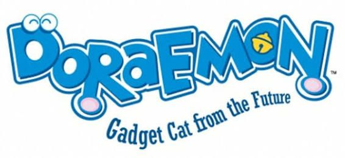

Phim hoạt hình
Phần 90 - Mình Là Nobiko, Suneo Khổng Lồ Xuất Hiện
Tập 96 - Vương Quốc Dưới Lòng Đất Của Nobita, Họa Sĩ Chaiko
Tập 220 - Quái Vật Trên Hoang Đảo - Hoạt Hình Tiếng Việt
Phần 59 - Ngày Sinh Nhật Rỗng Túi Của Suneo, Triệu Phú Nobita
Mô tả